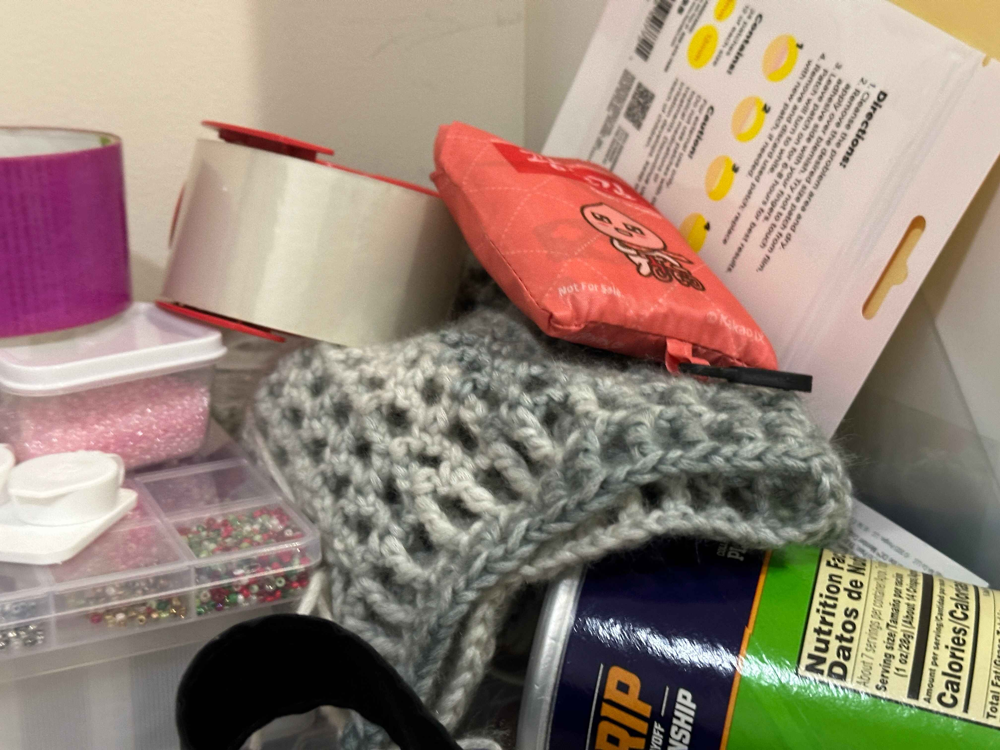

having a hobby doesn't always look like how it seems on the internet

Having a hobby is all fun and games until you start prioritizing your hobbies over more important things like school work.
Having a hobby is all fun and games until you start prioritizing your hobbies over more important things like school work.